← Back to supported mods
Parts
"IXS Hull" Antimatter Catalyzed Fusion Reactor
Advanced Mobile Processing Lab
Airborne Diode Laser Transmitter
Blanket Photovoltaic Solar Power Receiver

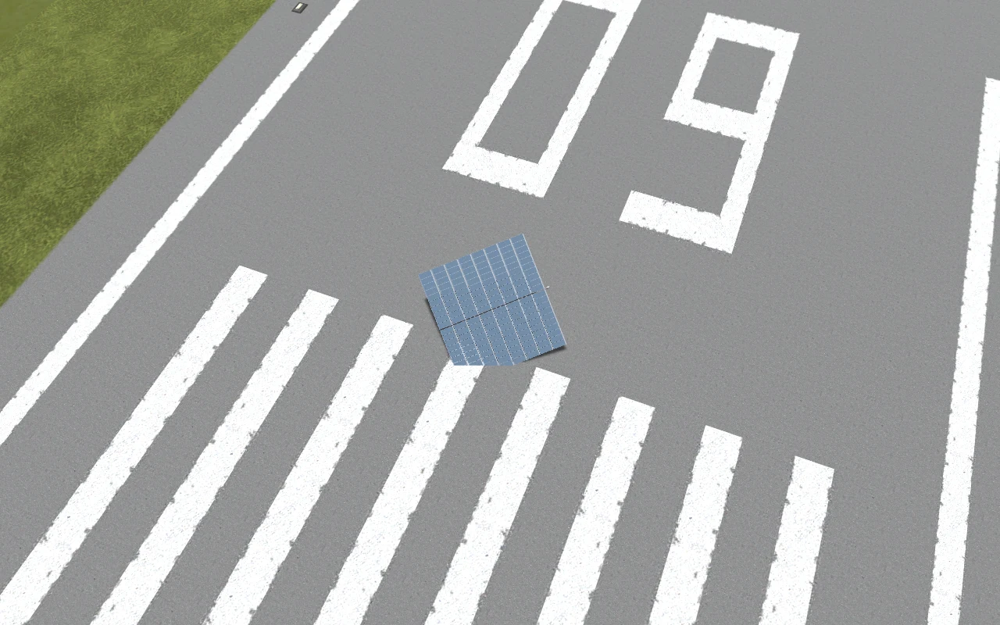
Blanket Photovoltaic Ultraviolet Power Receiver
Blanket Thermophotovoltaic Receiver
Circular Solar Photovoltaic Receiver
Circular Thermophotovoltaic Receivers
Circular Ultraviolet Photovoltaic Receiver
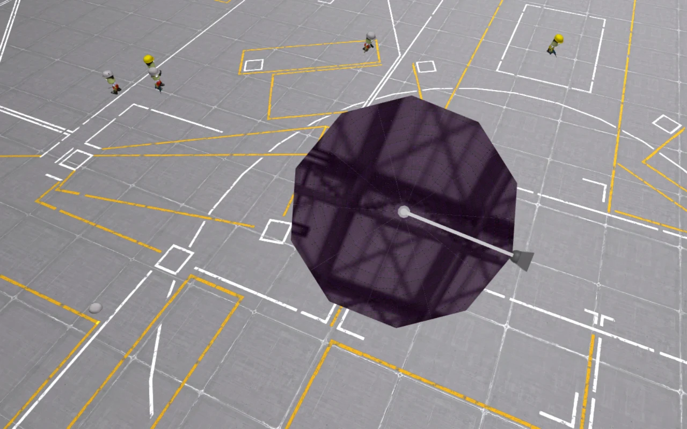

CommandCenter Dome
Deployable Solar Shield

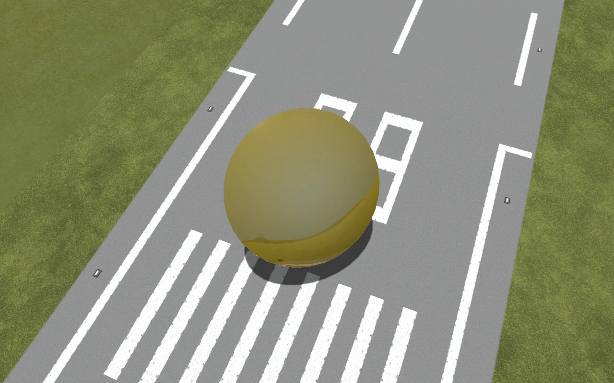
Double Pivoted Infrared Mirror
Double Pivoted Light Mirror

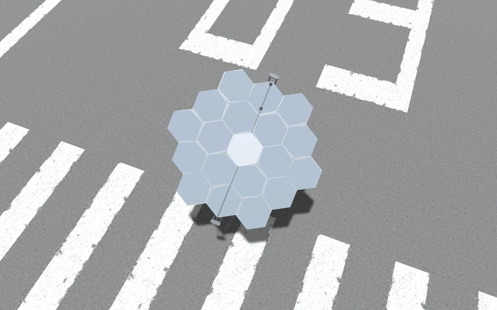
Double Pivoted Photovoltaic X-Ray Receiver

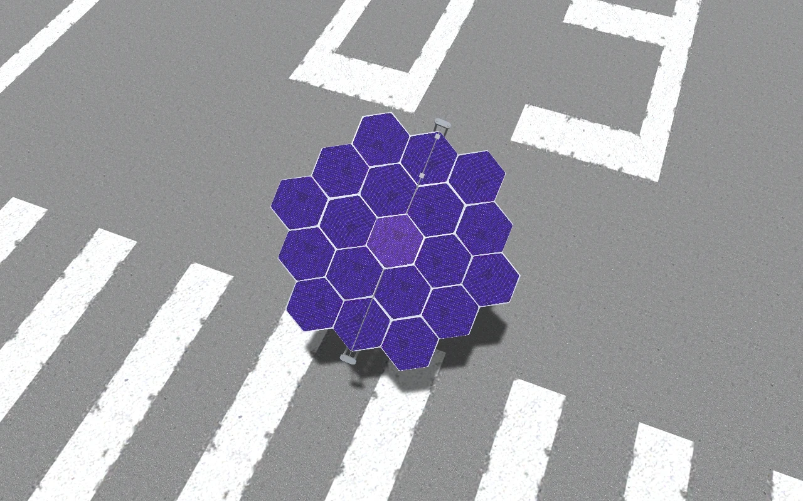
Double Pivoted Thermophotovoltaic Receiver

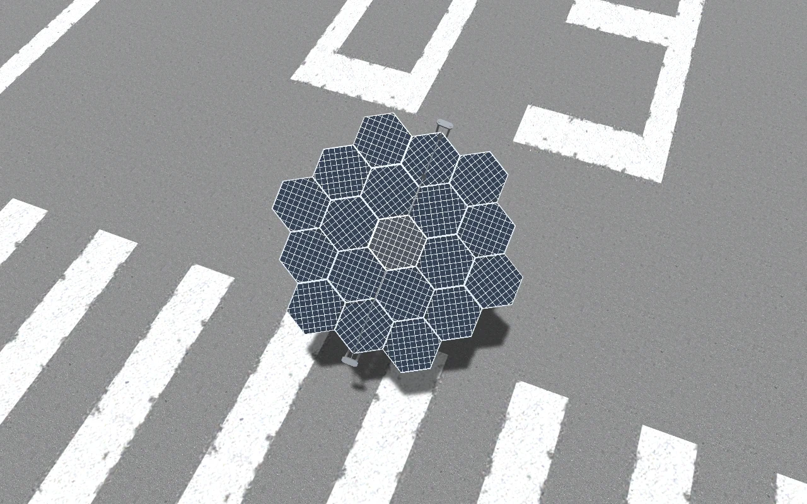
DT-L-IR-1 Laser Beam Transmitter
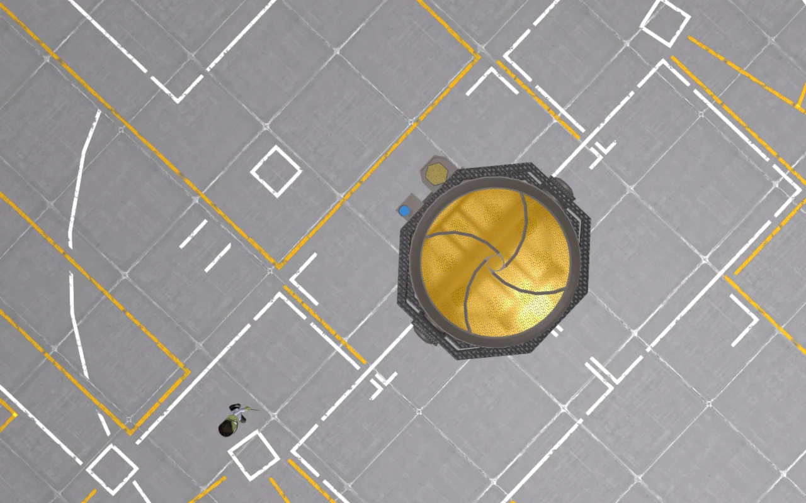

iHAL Scanner Probe
Infrared Telescope
IXS Command Module

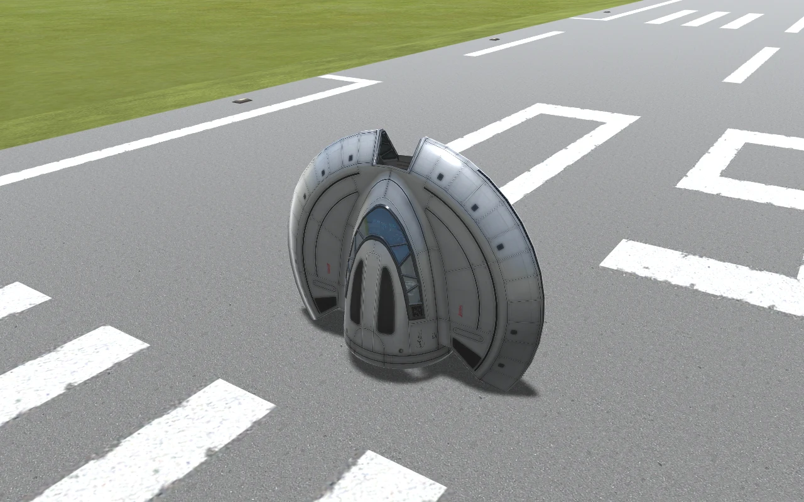
IXS Crew Habitat

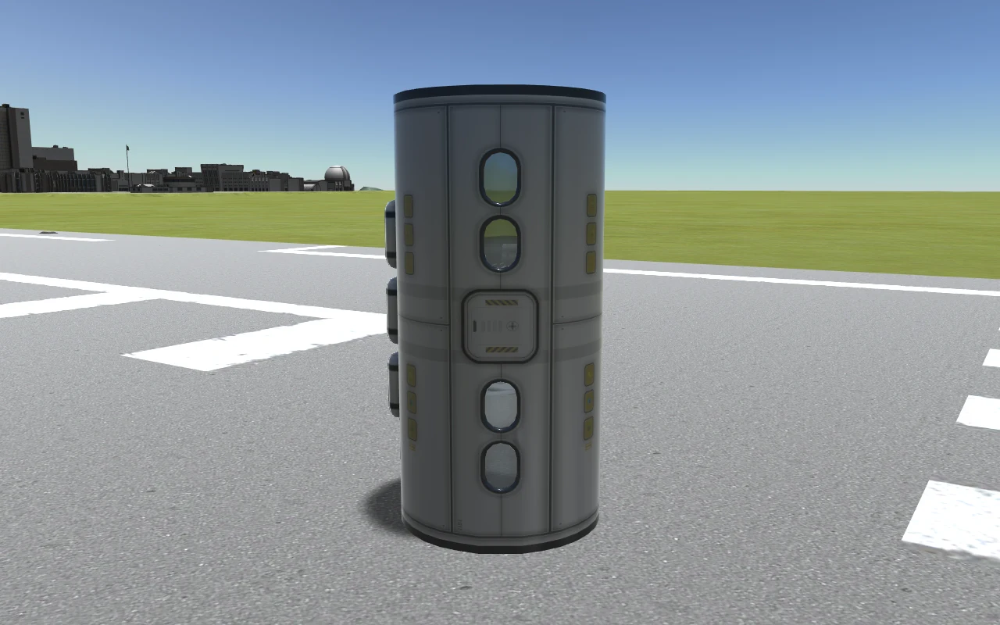
IXS Laser

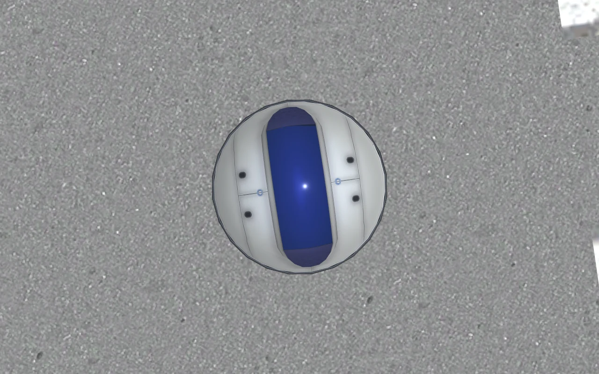
IXS Mobile Science Laboratory
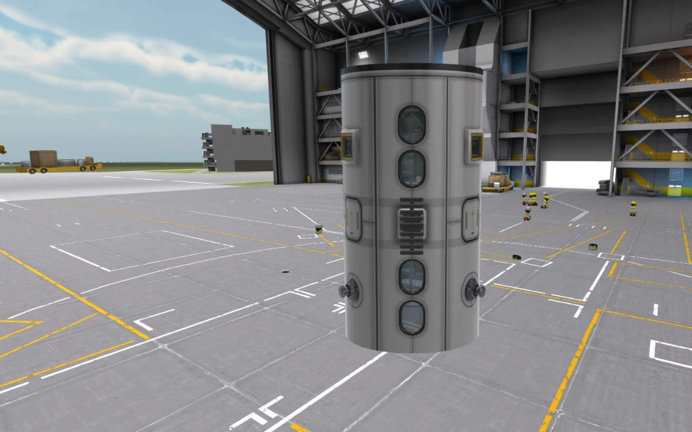
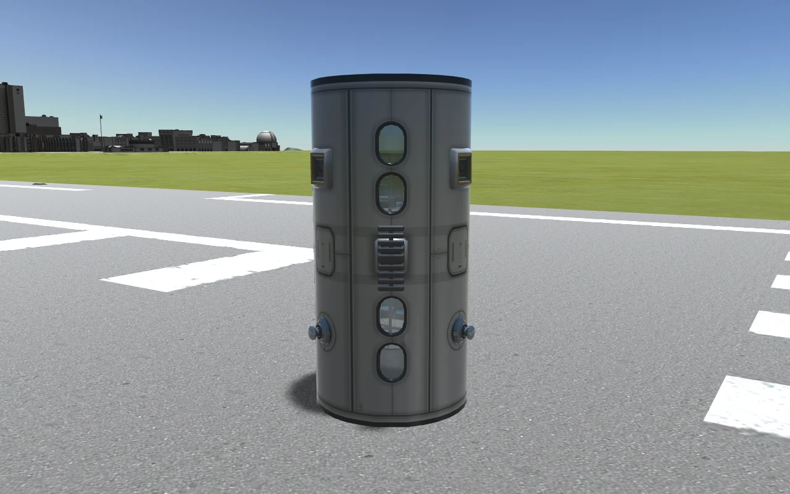
IXS Sensor Array
Science Laboratory

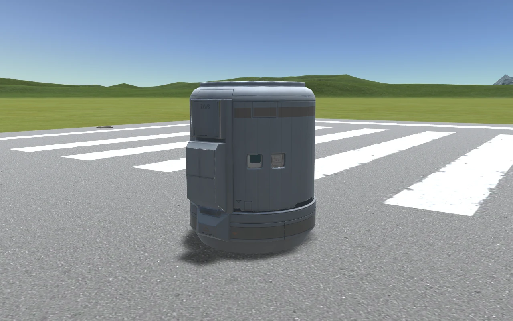
Solar Concentrating Mirror Thermal Receiver
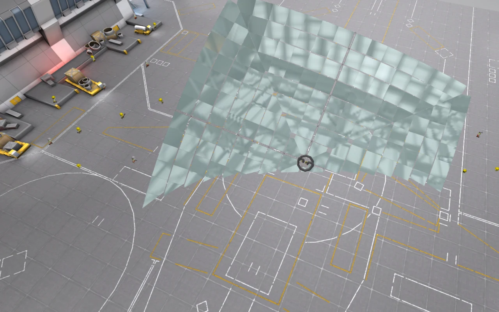

Triangle Solar Panel
Wrapped Photovoltaic X-Ray Receiver

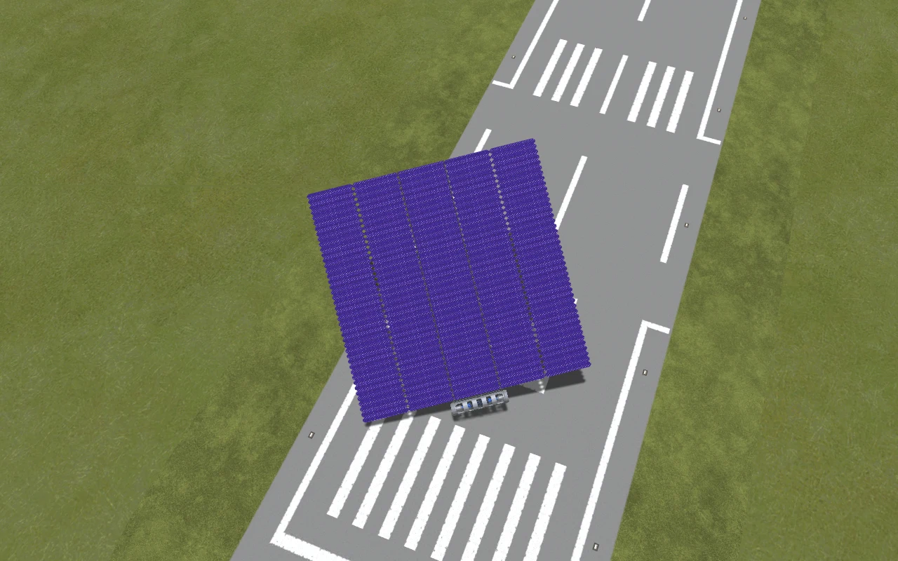